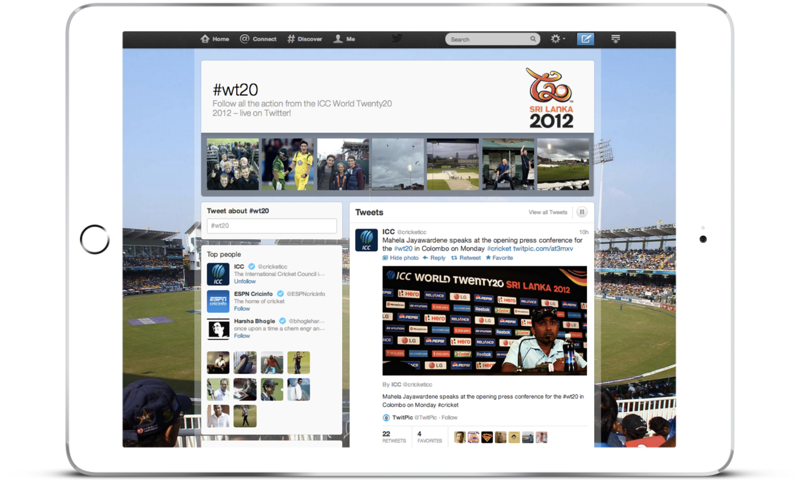
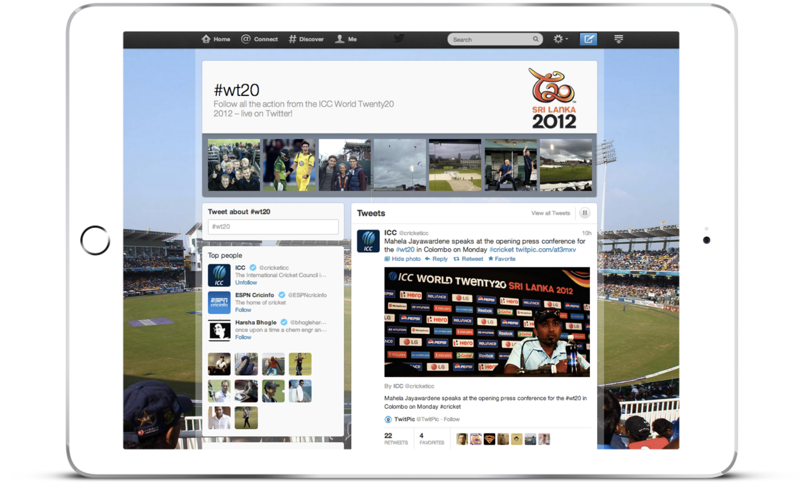
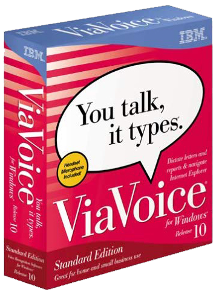

Thanks for stopping by! This page shows a snapshot of my work which keeps evolving as I learn and create new things every day.
I'm a passionate Leader, People Advocate, Product Builder, AI innovator, Entrepreneur, Mentor, Coach, Educator,
Eternal Learner, Electronic Musician, Chocolate Addict, Human.
How are you making the world a better place today?
Share your thoughts. Say Hi! Thanks for connecting.

In 2022, I joined the Slingshot Aerospace team as the Chief Product Officer. Together with my team, I reimagine how we can apply advanced analytics, machine learning, computer vision, and collaborative tools to data from earth and space, providing customers with clarity in complex situations.
Slingshot Beacon is the world’s first collision avoidance coordination and communications platform for space.
Slingshot Laboratory is an easy-to-use, immersive, next-generation space simulation and training environment to learn the fundamentals of astrodynamics and space domain awareness.
The Slingshot Global Sensor Network is the World’s Only LEO to GEO Day/Night Optical Satellite Tracking Service.
Seradata SpaceTrak is the industry’s leading space research tool.
I joined the Astra Product Management team in August 2021 as the Vice President and Head of Product to build products and services that improve life on Earth from space by creating a healthier and more connected planet.
As one of six officers in Mission Control, I helped the company write history by reaching space and successfully deploying a satellite into a low-earth orbit (live tracker).
I built a team of 15+ senior product leaders that shape the company's product portfolio.
ߚࠏur LV0007 rocket lights up iconic Times Square in New York on the @Nasdaq tower! #AdAstra pic.twitter.com/0Hu2OxzPfM
— Astra (@Astra) December 10, 2021
In May 2020, I joined the Johnson & Johnson Digital Health Technology team as the Global Head of Product. Together with my team, I reimagined how health and well-care are accessed, delivered, managed, and experienced at scale. I turned advances in technology into products that have the potential to create a dramatic positive impact for many people in the world and to help us live longer, healthier, happier lives.
I led J&J's global Health Technology product – built and grew the product org with 12 people in Product, Design, Data Science, Marketing teams. My team created a next generation heart health monitor app “Heartline” on Apple Watch in collaboration with Apple and drove user adoption and growth toward the world’s largest clinical study on a wearable. We launched the “Scout for Back Pain" app, J&J’s first Digital Therapeutic.
My product team also built a number of multi-platform (iOS, Android, React Native, Web) mobile apps for consumers and clinical trials: Alzheimer Care, Multiple Sclerosis management, Depression detection, Immunology, Digital Surgery Management, Holistic Skin Health, Medication Adherence in close collaboration with clinical research, medical, and consumer teams.
I joined FACEBOOK in January 2018 to lead the International Product team and strategic "Women in Emerging Markets" initiative. I built and led a product growth team of 7 PMs and orchestrated a team of 50+ engineers, user researchers, designers, data scientists, growth marketers, data engineers, content strategists, and marketers. My team drove a global growth effort to bring the next billion users on the platform, especially from key markets India, Germany, Japan, Russia, South Korea. We created rapid product experiments and launched a series of growth-driving features like “locked profiles”, “anonymity”, “smart notifications”.
I then took over leadership of Facebook's AI Applied Research product team: I started and grew a product team to turn advances in AI research into production-ready prototypes of future services: AI-powered AR Glasses (project “Orion”, consumer launch expected 2023, applied AI computer vision), wrist-based smart wearables (voice navigation), “Portal" AI-powered video hardware (launched 2019, computer vision), and multi-lingual AI voice commands for Oculus VR (launched 2020).
In 2014, I started Savvy, global education platform that makes anyone with expertise bookable and connects them with learners for 1:1 learning sessions over live browser-based video chat. Savvy democratizes teaching and connects teachers and learners anywhere.
The platform is designed to quickly create a strong relationshop between learner and teacher. Savvy builds on their relationship, puts learners in charge of their goals, and handles all the logistics (scheduling, payments, cancellations, communication) so both parties can focus entirely on the learning experience.
Savvy had a successful exit through acquisition in end of 2018.
I led Airbnb’s global product and market strategy to grow the two-sided marketplace in 192 countries. In my role as International Product Lead, I ran strategic experiments and directed growth efforts such as the Airbnb localization platform. I introduced dramatic changes to the platform's user interface outside the U.S. (e.g. in Japan) to create a "local" experience with great success.
At Twitter, I led the International Product Team, ran growth experiments and grew usage in strategic international markets: I launched Twitter in bi-di languages, built unique product features for users in Japan, onboarded all major German public media and Bundesliga soccer clubs, relaunched the "verified" accounts program, got the first #hashtag on air on German Primetime News, launched special event pages for Oktoberfest, introduced live soccer scores, and made Twitter the primary partner for the 2012 ICC World Twenty20 cricket tournament, connecting hundreds of millions of people around the globe.
 

As Product Lead for Mozilla, I launched Firefox for Android, the first browser of it's kind that was designed around the user's privacy and data safety bringing the "do not track" feature to mobile phones. The innovative browser established new standards for HTML5 and CSS3, featured add-ons, "personas" customization options, and seamless integration and synchronization of bookmarks and passwords across web and mobile Firefox browsers. Did you know that a
I joined Google in early 2006 and relocated from Germany to San Francisco (via Zurich, Switzerland) to drive the company's localization across all product portfolios. I launched dramatic improvements for users in Asia and set standards for the company's approach to global success. I managed iGoogle and launched a customization feature which led to significant increase in search volume as users designed their own Google page and made it their browser start experience. The feature was so popular that news about it "fail-whaled" Twitter for several hours :)
I joined SAP in 1995 as a software engineer. My empathy with users and passion for building great product led me to Product Management. At a time when barely anyone had mobile phones and only nerds had handhelds called "PDAs", I saw the potential of mobile tech and hence initiated a project that would put SAP on the map as innovation driver: SAP CRM for Tablet PC. I drove SAP's corporate strategy in the office of the CEO for three years before I relocated to the U.S. in 2006.
As a College student, I worked for IBM in Berlin and in Heidelberg, Germany. In their Scientific Research Center, I applied my AI skills using Knowledge Base Programming Language PROTOS-L and helped advance speech technology in products like Viavoice. Machines that understand human speech was considered quite futuristic at the time. Today, even simple wearable devices has some sort of speech-enabled Assistant built in. Good times.
Thomas ArendManagement is a service I offer to my team to allow everyone to do the best work of their lifetime and advance their careers.”
Thomas ArendMotivation is mainly driven by purpose, autonomy, and mastery. You can't really motivate someone, but you can set up the right environment.
Thomas ArendEmpathy is my super power.

© 2023 Thomas Arend. All rights reserved. Contact: mail@thomasarend.com